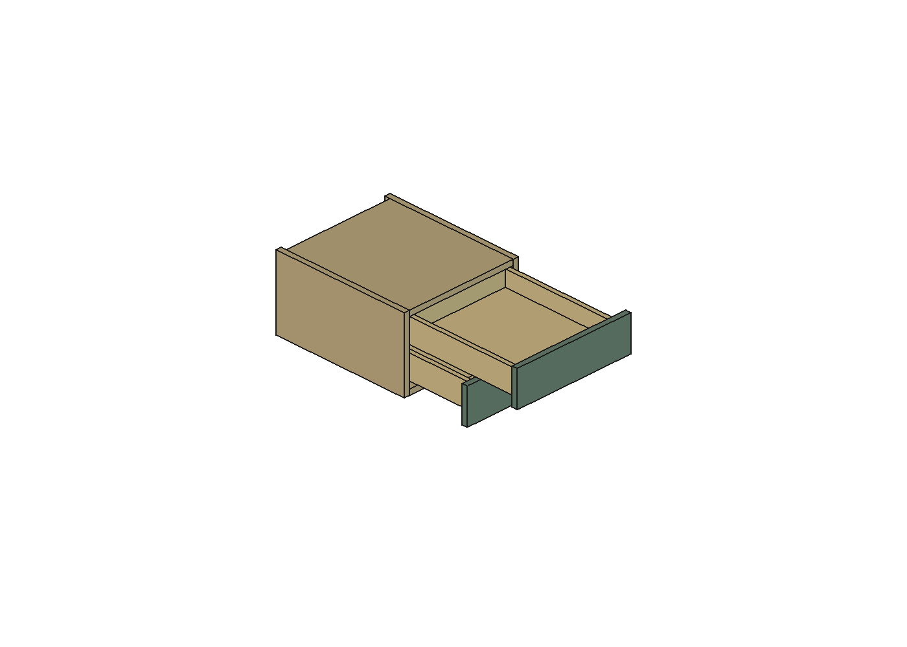

Estudo separado da R42, desenvolvido em 21/10/2026, São Paulo. A solução geométrica baixa as duas caixas internas e a base do módulo em 3 mm, mantendo as frentes na posição original. Incorpora a proposta anterior de ampliar a traseira em 20 mm. O encaixe da madeira foi conferido; a montagem física FGVTN ainda depende de perfil, engates, recortes e fixações.
Abrir estudo no FreeCAD · Verificações numéricas · Conferência após reabrir

Vista de estudo com gaveta inferior a 200 mm e superior a 375 mm de abertura. As guias e os engates reais não estão representados; a imagem não demonstra sustentação da gaveta.
| Item | Referência R42 | Proposta |
|---|---|---|
| Carcaça: largura × profundidade × altura | 400 × 450 × 240 mm | 400 × 470 × 243 mm |
| Posição das frentes e junta entre elas | Junta de 2 mm | Preservadas, sem deslocar as frentes |
| Base de madeira, espessura | Z480–498; 18 mm | Z477–495; 18 mm |
| Caixas internas | Posição original | Ambas 3 mm mais baixas, preservando a distância entre elas |
| Folga da lateral superior até o tampo | 1 mm | 4 mm; após subida de 3 mm da caixa, 1 mm residual |
| Profundidade livre da carcaça | 412 mm | 432 mm; 12 mm acima do mínimo de 420 mm documentado |
| Caixa: largura × profundidade externas | 352 × 390 mm | 353 × 400 mm |
| Base interna livre de cada caixa | 322 × 359 mm | 323 × 369 mm |
| Laterais / fundo / altura de parede acima do fundo | 15 / 15 / 53 mm | 15 / 15 / 53 mm, preservados |
A base desce 3 mm para não consumir a margem inferior ao baixar as caixas. As laterais e o fundo da carcaça acompanham esse aumento. O topo e a frente do módulo permanecem no lugar. A faixa de carcaça abaixo da frente inferior passa de 1 para 4 mm: há uma pequena alteração externa visível, além dos 20 mm acrescentados atrás. Não houve interseção do volume acrescentado com os sólidos do apartamento examinados; isso não mede conforto para pernas ou condições reais da unidade.
A base interna cresce aproximadamente 3,1%, sem reduzir a altura das paredes das caixas. Além disso, foram testados prismas com as alturas úteis de referência declaradas na R42: 60,4 mm na inferior e 54 mm na superior.
| Gaveta | Prisma de referência anterior | Prisma proposto |
|---|---|---|
| Inferior | 322 × 359 × 60,4 mm = 6,982 L | 323 × 369 × 60,4 mm = 7,199 L |
| Superior | 322 × 359 × 54 mm = 6,242 L | 323 × 369 × 54 mm = 6,436 L |
Os dois prismas ficaram livres da madeira modelada. São volumes geométricos de comparação, não capacidades comerciais certificadas. As alturas acima de 53 mm excedem a parede da caixa e dependem também do espaço sobre ela. A ausência de perfil e engates oficiais impede declarar a montagem completa validada.
b30ae9ab9c82620ecdab26b2cfae589037954356d515b483b5b6849f76e4bc26.A página oficial FGVTN, relida nesta etapa, continua vinculando a ficha Set/2023 e a instrução Set/2024. Cópia local da instrução. Não se adotou o gatilho 3D de outra página como se fosse o engate convencional do kit.
O grupo de referência R42 fica oculto. As duas peças “Inferior” e “Superior” têm a propriedade Extensao, em milímetros; usar de 0 a 375. “Volumes_uteis_comparacao” contém os prismas de referência, ocultos para não confundir com madeira. O estudo permanece separado do apartamento consolidado.